Projet conçu dans le cadre d'un concours étudiant sur le thème "Vivre en 2050". BeatWay imagine une navigation qui s'adapte au rythme biologique, au stress et à l'environnement de l'utilisateur — pas seulement au trafic.
Créer une expérience mobile fluide et rassurante qui propose des trajets adaptés au bien-être.
Citadins actifs sensibles au stress et à la qualité de leurs déplacements quotidiens.
Hiérarchiser les données biométriques et environnementales sans surcharger l'écran mobile.
Les GPS actuels optimisent uniquement le temps ou la distance. Ils ignorent le stress, la qualité de l'air et le rythme de vie de l'utilisateur.
BeatWay propose une navigation centrée sur l'humain : le trajet le plus rapide n'est pas toujours le meilleur.
Les trajets imposés par les GPS classiques traversent des zones bruyantes et polluées qui augmentent le stress.
Intégrer le rythme cardiaque et le niveau de stress via l'Apple Watch sans complexifier l'interface.
Afficher carte, données bio et options de trajet sur un écran mobile sans surcharge cognitive.
Chaque fonctionnalité répond à un besoin identifié lors de la phase de recherche.
Itinéraire optimisé pour le calme, l'air pur et les espaces verts
Pouls et stress en temps réel via Apple Watch
Score environnemental en temps réel sur chaque trajet
Comparaison zen, rapide et vert en un coup d'œil
Naviguez dans le prototype interactif de BeatWay, conçu sur Figma.
Discutons de votre projet autour d'un café virtuel.
Je serais ravie de donner vie à vos idées !